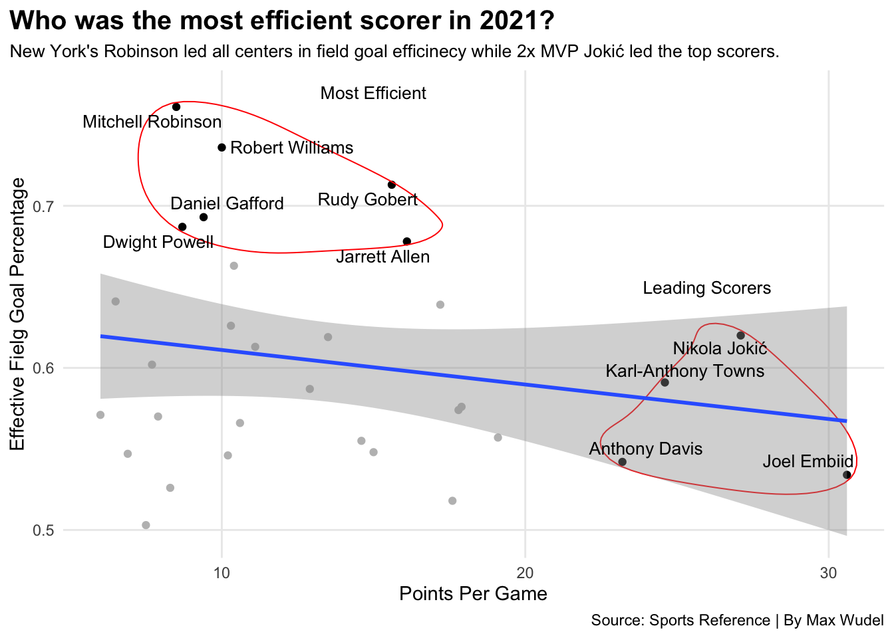

The Golden State Warriors were up 3-1 on the Cleveland Cavilers during the 2016 NBA Finals. Heading into game 5 they needed just one more win to claim their back-to-back championships. Everything was going perfectly until early on in the second half when their starting center, Andrew Bogut, left for the locker room with an apparent knee injury. He never returned to the series and the Cleveland Cavilers came back to win a historic title. Bogut averaged 4.0 points, 3.0 rebounds and 1.8 blocks in the 2016 Finals but his impact went far beyond simple statistics. Standing at an immense seven feet tall, Bogut was the primary setter of screens and played impeccable defense. He was a crucial contributor for the most important aspects of that Golden State team and without him they fell apart.
Nowadays, Centers have become highly under-appreciated in the National Basketball Association. Kids only want to talk about Ja Morant’s dunks or Steph Curry’s three pointers. Nobody seems to pay attention to the big man who rebounds Morant’s miss or sets the perimeter screen for Curry to take an open shot. Centers are just as important to the game of basketball as any other player despite their more “boring” play style.
Over the last couple of years the Center position has seen new life as players like Nikola Jokic and Joel Embiid exert their dominance on the court. They, along with many others, have adapted their play style to better fit today’s game. Centers are no longer restricted to the paint and have more freedom with where they take their shots.This has paved the way for hybrid positions like the Stretch-4 or Stretch-5. As younger talent joins the league, veterans like Brook Lopez and Al Horford have revamped their game to better fit the league’s style.
Regardless of how the league changes the true nature of the Center position remains true. The big boys have to play defense and command a presence on the court. 3x Defensive Player of the Year Rudy Gobert has done just that. Gobert patrols the paint and only leaves after he blocks a shot into the concessions.
How can we determine who the best centers are in the NBA?
Well lets take a look at some of the numbers.
We will only be looking at players who are listed as just a center so players like Giannis Antetokounmpo or Jarren Jackson Junior wont be appearing on this. Giannis is listed as “F” for Freak.
Code
library(tidyverse)library(ggrepel)library(ggalt)library(gt)stats21 <-read_csv("nba21stats.csv") %>%filter(Pos =="C", GS >30)pointleaders <- stats21 %>%filter(PTS >20)efgpleaders <- stats21 %>%filter(`eFG%`> .67)stats21totals <-read_csv("stats21nbatotals.csv") %>%filter(Pos =="C", TRB >650)rebounds <- stats21totals %>%group_by(Player) %>%summarise(TotalOffRebounds =sum(ORB),TotalDefRebounds =sum(DRB)) rebounds %>%pivot_longer(cols=starts_with("Total"), names_to="Type", values_to="Rebounds") -> reboundsgraphcto <-read_csv("stats21nbatotals.csv") %>%filter(Pos =="C") %>%group_by(Player, Tm, STL, BLK) %>%summarise(CausedTurnovers =sum(STL) +sum(BLK)) %>%arrange(desc(CausedTurnovers)) %>%ungroup() %>%top_n(10)ggplot() +geom_point(data=stats21, aes(x=PTS, y=`eFG%`), color="grey") +geom_point(data=efgpleaders, aes(x=PTS, y=`eFG%`), color="black") +geom_point(data=pointleaders, aes(x=PTS, y=`eFG%`), color="black") +geom_encircle(data=efgpleaders, aes(x=PTS, y=`eFG%`), s_shape=0, expand=0.01, colour="red") +geom_text(aes(x=26, y=.65, label="Leading Scorers"),size=3.5) +geom_text(aes(x=15, y=.77, label="Most Efficient"),size=3.5) +geom_encircle(data=pointleaders, aes(x=PTS, y=`eFG%`), s_shape=0, expand=0.01, colour="red")+geom_smooth(data=stats21, aes(x=PTS, y=`eFG%`), method="lm") +geom_text_repel(data=pointleaders, aes(x=PTS, y=`eFG%`, label=Player),size=3.5) +geom_text_repel(data=efgpleaders, aes(x=PTS, y=`eFG%`, label=Player),size=3.5) +labs(x="Points Per Game", y="Effective Fielg Goal Percentage", title="Who was the most efficient scorer in 2021?", subtitle="New York's Robinson led all centers in field goal efficinecy while 2x MVP Jokić led the top scorers. ", caption="Source: Sports Reference | By Max Wudel" ) +theme_minimal() +theme(plot.title =element_text(size =15, face ="bold"),axis.title =element_text(size =11),plot.subtitle =element_text(size =10),panel.grid.minor =element_blank(),plot.title.position ="plot" )

What are we looking at here? To start, Effective Field Goal Percentage is an adjusted metric for the fact that a 3-pointer is worth more than a 2-pointer. On the right hand side we have a collection of the leading scorers and up top we have a collection of those who were the most efficient scoring the basketball. The leading scorers are in a position where they are commanding a lot of offensive attention. All four of them have specific plays set for them and the near freedom to play how they desire. Leading all centers and the entire league in scoring was Joel Embiid. While Embiid scored in high volume, he did not score as efficiently as Nikola Jokic nor anywhere near as efficient as Mitchell Robinson.
Now what makes Robinson so efficient? It’s the fact that he isn’t taking very many shots. Robinson averaged just under five attempts a game in his 62 starts. This goes to show that Robinson is a more defensive minded center. He understands that his role is to protect the rim and grab rebounds. Others like Rob Williams and Jarrett Allen are in this same conversation. They are doing the dirty work to help their team win games.
We just mentioned rebounds and that might be the most important aspect for the center position. It is pivotal in the game of basketball to have as many possessions as you possibly can and rebounds allow a team to do just that. Offensive rebounds are especially pertinent as they allow you team another attempt at scoring points.
Lets take a look at the top rebounding centers from last year.
Code
ggplot() +geom_bar(data=reboundsgraph, aes(x=reorder(Player, Rebounds), weight=Rebounds, fill=Type)) +scale_fill_manual(values=c("grey18", "darkgreen")) +coord_flip() +labs(x="", y="Rebounds", title="Steven Adams hoarded offensive rebounds. ", subtitle="Adams grabbed over fifty more than the next player but still falls short of the league leaders.", caption="Source: Sports Reference | By Max Wudel" ) +theme_minimal() +theme(plot.title =element_text(size =15, face ="bold"),axis.title =element_text(size =12),plot.subtitle =element_text(size =10),panel.grid.minor =element_blank(),plot.title.position ="plot" )
The most impressive part of this graph is Steven Adams. Nearly half of all his rebounds were on the offensive end and no one else comes close to that ratio. Another notable feat comes from Andre Drummond as he primarily came off the bench last season and still managed to finish within the top ten for total rebounds.
Leading the rebounders is Nikola Jokic and following just behind him is Rudy Gobert. Jokic continues to impress as he gathered over 1100 boards. This shows that not only is Jokic scoring lots of points at a highly efficient rate; he is also also making sure to gobble up every basketball he can find. Clint Capela has made a name for himself solely from rebounding and his place on this list cements that.
Rebounds are to basketball as ground balls are to lacrosse. They are a nitty gritty feature of a contact sport. Once that ball hits the rim its a free for all and who else would you want fighting for that ball than a seven foot tall man.
The last statistic we will look at are turnovers. More specifically caused turnovers.
Lets take a look at who forced the most turnovers during last years NBA season.
Code
cto %>%gt() %>%cols_label(CausedTurnovers ="Caused Turnovers",STL ="Steals",BLK ="Blocks",Tm ="Team") %>%tab_header(title ="Who forced the most turnovers?",subtitle ="Utah's Gobert led the league in blocks while Denver's Jokić led all centers in steals.") %>%tab_style(style =cell_text(color ="black", weight ="bold", align ="left"),locations =cells_title("title") ) %>%tab_style(style =cell_text(color ="black", align ="left"),locations =cells_title("subtitle") ) %>%tab_source_note(source_note =md("**By:** Max Wudel | **Source:** [Sports Reference](https://www.basketball-reference.com/leagues/NBA_2022_totals.html)") ) %>%tab_style(locations =cells_column_labels(columns =everything()),style =list(cell_borders(sides ="bottom", weight =px(4)),cell_text(weight ="bold", size=13) ) ) %>%opt_row_striping() %>%opt_table_lines("none") %>%tab_style(style =list(cell_fill(color ="gold"),cell_text(color ="navy") ),locations =cells_body(rows = Tm =="UTA") ) %>%tab_style(style =list(cell_fill(color ="blue"),cell_text(color ="yellow") ),locations =cells_body(rows = Tm =="DEN") )
Who forced the most turnovers?
Utah's Gobert led the league in blocks while Denver's Jokić led all centers in steals.
This graph details a players blocks, steals, and forced turnovers (a combination of blocks and steals). Leading all centers in blocks last year was Rudy Gobert and leading all centers in steals was Nikola Jokic. Gobert is an immense defensive presence so it comes with no surprise that he led in blocks. Steals are typically a stat for guards and it is extremely impressive for a big man like him to accumulate such a total. For context, Dejounte Murray led the NBA last season with 138 steals and Jokic finished tenth among the entire league. That is unheard of.
Topping our list here is a familiar name in Mitchell Robinson. Last year he had the best eFG% among all centers and also led them in forced turnovers. This is rather impressive for a guy you don’t hear a lot of noise about. Robert Williams is another name to think about because his efficiency and points per game is nearly identical to that of Robinson’s and he finished with just one less forced turnover. Robinson, Williams, and Gobert might not get you 25 points a night but they are going to fight to keep the ball out of their net.
With everything said and done, who are the best centers in the NBA? Well it depends on what you’re looking for. If your value offensive prowess then Joel Embiid or Karl-Anthony Towns might be your option. If you are looking for a rebounding machine you might focus on Clint Capela or Steven Adams for the increased offensive possessions. If you want a defensive specialist then Mitchell Robinson or Robert Williams is your answer.
But who are the best.
The best offensive center is Joel Embiid as he rebounds at a high level and scores at an even higher one. The best defensive center is Rudy Gobert with his ability to force turnovers and gobble up rebounds. The best overall center is without a doubt Nikola Jokic. Jokic efficiently scores in high volume and led the league in rebounds while also leading all centers in steals and finishing within the top five for forced turnovers. There’s a reason why he won last years MVP trophy.